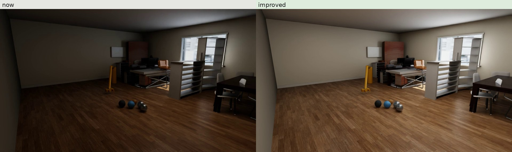
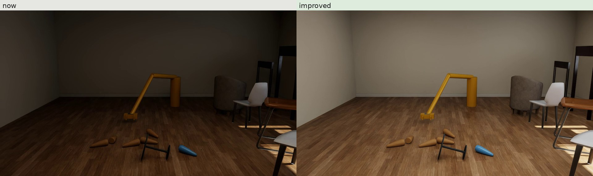
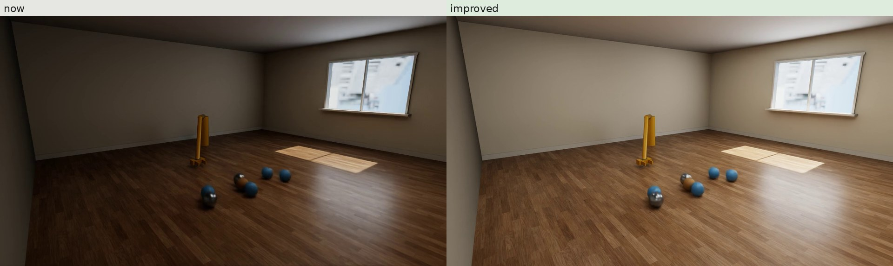
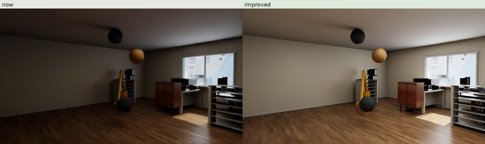
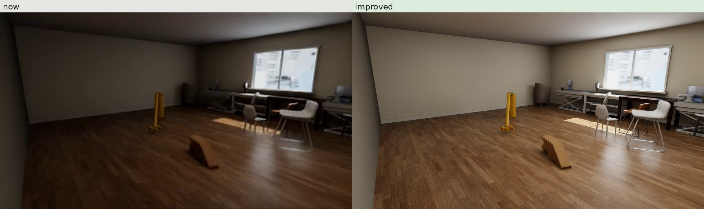
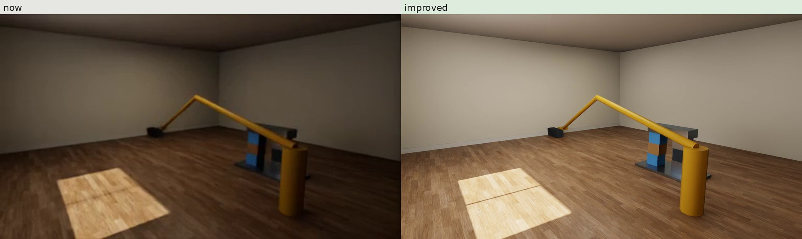

A few clips rendered again for the paper, to approve before every clip is re-rendered. Same simulations, cameras, objects and rooms; only the renderer and the lights change. Updated 13 November 2026, 00:15 UTC.






cascade (video-model test record, dark furnished room) · every method: now (left) and improved (right), same frame times
bowling (video-model test record, dark furnished room) · every method: now (left) and improved (right), same frame times
billiards (video-model test record, room without furniture) · every method: now (left) and improved (right), same frame times
balloon (State predictors on V2 test, held out) · every method: now (left) and improved (right), same frame times
topple (State predictors on V2 test, held out) · every method: now (left) and improved (right), same frame times
rubble (State predictors, simple set, held out) · every method: now (left) and improved (right), same frame times
cascade (video-model test record, dark furnished room) · physics engine, improved, full size (1280 x 720)
bowling (video-model test record, dark furnished room) · physics engine, improved, full size (1280 x 720)
billiards (video-model test record, room without furniture) · physics engine, improved, full size (1280 x 720)
balloon (State predictors on V2 test, held out) · physics engine, improved, full size (1280 x 720)
topple (State predictors on V2 test, held out) · physics engine, improved, full size (1280 x 720)
rubble (State predictors, simple set, held out) · physics engine, improved, full size (1280 x 720)
Wan2.2 TI2V-5B, Wan2.2 I2V-A14B, Cosmos-Predict2.5 2B and 14B (vdm_test_v1, the co-author's clips, not run again). MiniMax H3 is left out of public pages (licence).
cascade (video-model test record, dark furnished room) · video models, action prompt: as generated (top) and with one post-hoc tone curve (bottom)
bowling (video-model test record, dark furnished room) · video models, action prompt: as generated (top) and with one post-hoc tone curve (bottom)
billiards (video-model test record, room without furniture) · video models, action prompt: as generated (top) and with one post-hoc tone curve (bottom)
| renderer now | real-time ray tracing, no anti-aliasing, 384 x 216 (tabs) or 960 x 540 (video-model conditioning frames), 4 to 8 subframes, the room's four lights |
| renderer improved | path tracing, 128 samples per pixel, OptiX denoiser, 1280 x 720, 8 subframes; the room's lights x1.6 to 2.6 and whiter, four 1.1 m ceiling panels, a 2.4 x 1.6 m fill light behind the camera, everything x1.15 |
| seconds per frame now (960 x 540) | 0.10 to 0.12 |
| seconds per frame improved (1280 x 720) | 0.13 to 0.16 |
| GPU memory per render process | about 1.6 GB (fits beside io90's and io92's idle Qwen replicas) |
| frames to re-render | V2 tab 106 clips x 7 methods, simple tab 52 x 7, V2 test tab 106 x 5, video-model records 41 x 5: about 280,000 frames at 30 fps |
| estimate for everything | 15 to 20 GPU-hours (2 to 2.5 h on io79's 8 GPUs; under 1 h on io79 + io90 + io92) |
| 1920 x 1080 instead | about 2.25 times the pixels: roughly 30 to 40 GPU-hours |